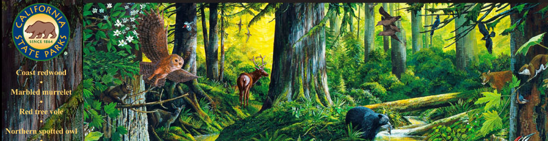
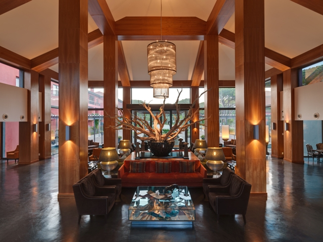
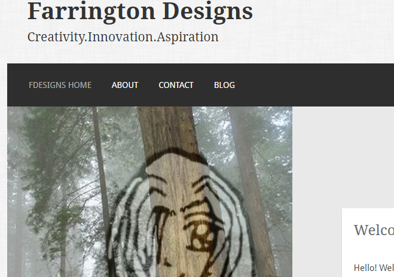

<<<<<<< HEAD
Current/Past Projects
Here are some of the recent projects I've done.
Note: This site is in Beta. Not all projects are here! Should you want to see the other projects in progress Click Here to view my Git Hub Profile!
I created the interactive intro, loading screen, and did the overall flash script for this project!

This was the best site that I have uploaded to GH pages on Github as a part of my experience at Epicodus!

This was a side project I was working on before Epicodus in order to learn Wordpress

=======
Current/Past Projects
Here are some of the recent projects I've done.
Note: This site is in Beta. Not all projects are here! Should you want to see the other projects in progress Click Here to view my Git Hub Profile!
I created the interactive intro, loading screen, and did the overall flash script for this project!
This was the best site that I have uploaded to GH pages on Github as a part of my experience at Epicodus!
This was a side project I was working on before Epicodus in order to learn Wordpress
>>>>>>> 7135d663d62768932e456bf45d914cde3cc5d214